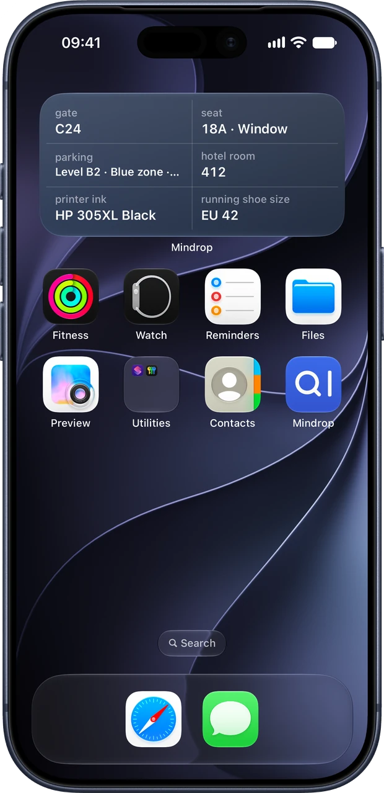
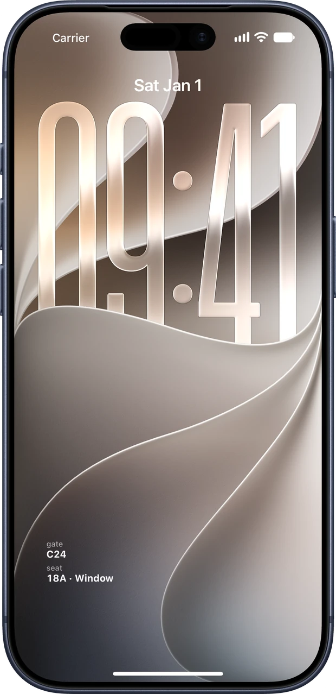
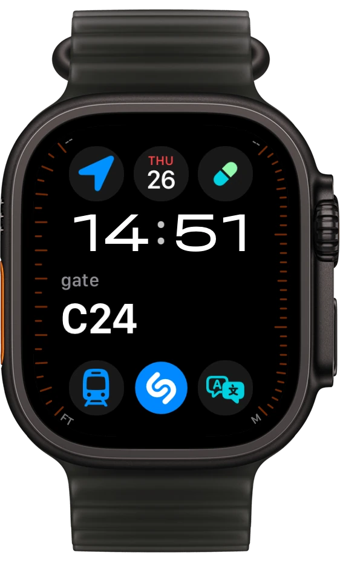
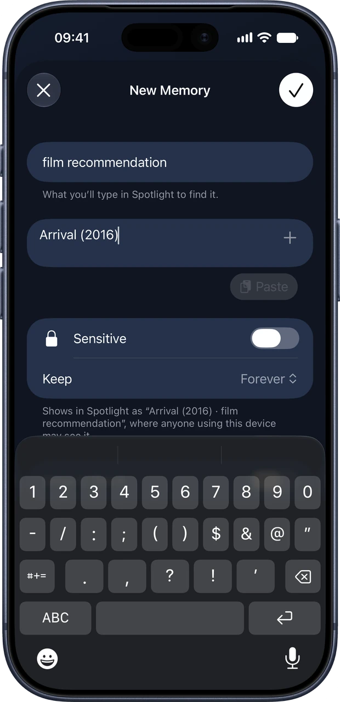
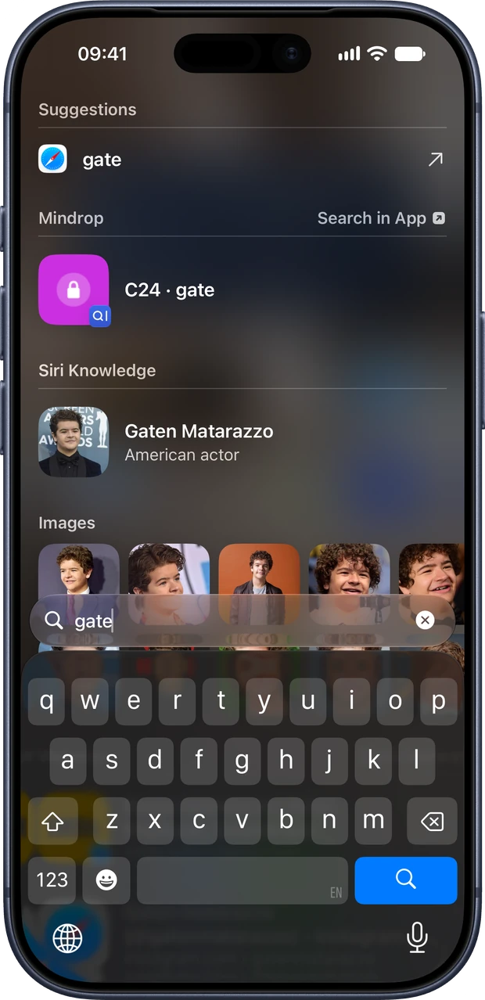
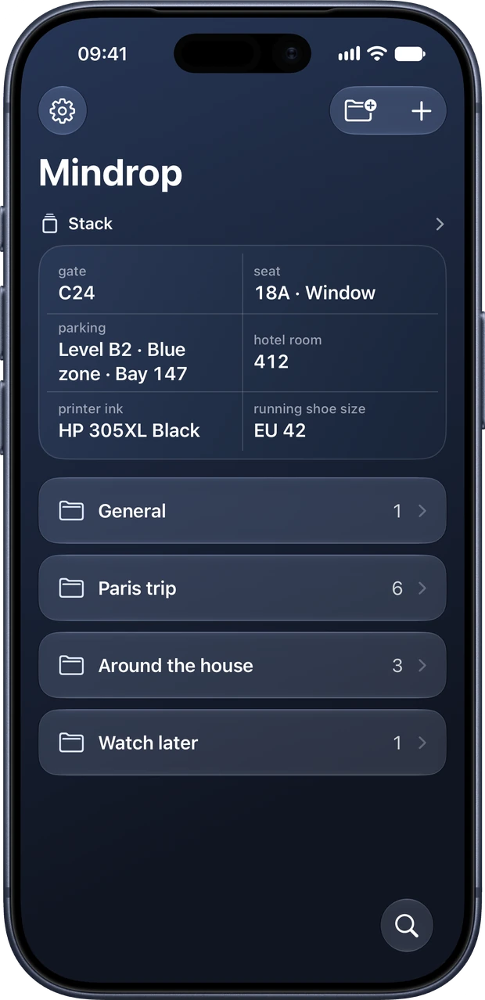
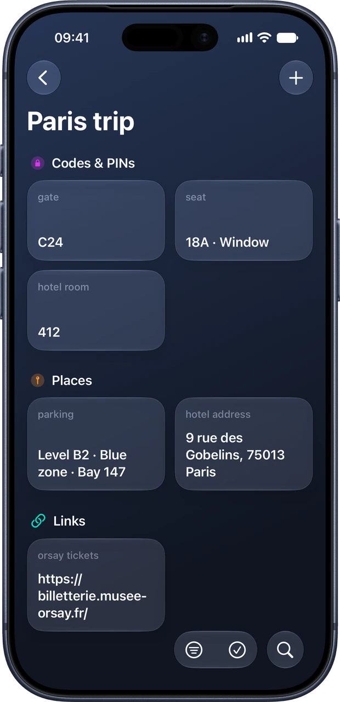
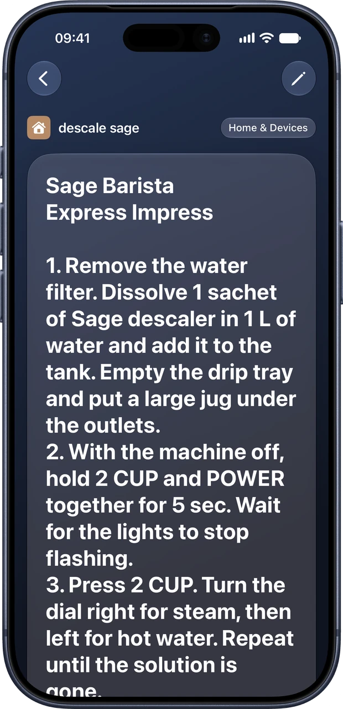
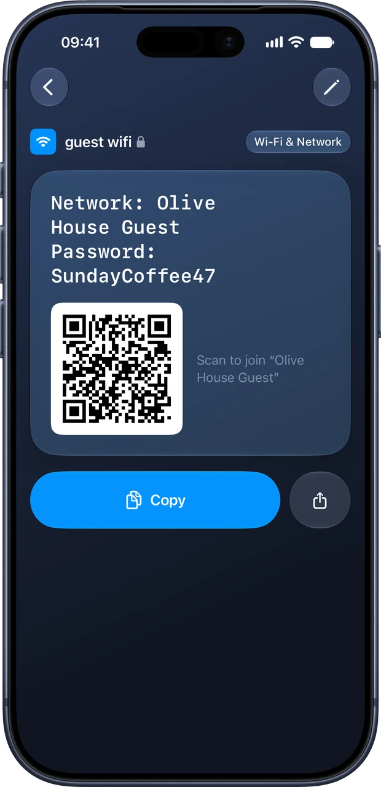

What you want to remember,
within reach.
Your departure gate. A film someone recommended. The little details you’ll need again.
Save a detail in Mindrop with a keyword you’ll remember. Find it right in Spotlight when you need it.
Illustrative Spotlight demo
Stack
Today’s details,
at a glance.
You’re walking through the terminal. Keep your gate and seat in Stack, then glance at your Home Screen or Lock Screen. On Apple Watch, put your first Stack detail right on your watch face.



Pick the memories you want at the top and reorder them as your day changes. Sensitive values stay off widgets.
Capture
Save it while
it’s on your mind.
Halfway through a video, someone recommends Arrival. Pull down in Mindrop to open a new memory and save it under film recommendation. When you want something to watch, type that keyword in Spotlight. The same trick works at the airport. Search for gate to see C24.
From another app, use the share sheet to save text, a link, or text from a screenshot. You can also scan a QR code or capture with Siri, Shortcuts, Control Center, or Apple Watch.




Folders
Keep related
details together.
Put your flight details, hotel address, and ticket links in a folder like Paris trip. Browse by category, search within the folder, or select several memories to move them together.
You can pull down inside a folder to save directly into it. When plans change, set a memory to expire or recover something you deleted from Recently Deleted.
Memory details
Find it.
Put it to use.
The descale light is on. Search for descale sage and open the steps you saved from your Barista Express Impress manual.
When a guest asks for Wi-Fi, open the saved network and show its QR code. You can also tap a value to copy it or open a saved link in your browser.


A little less
to keep in your head.
Your details stay in your hands.
Mindrop works offline without a Mindrop account. Mark a memory Sensitive to hide its value in Spotlight and unlock it in Mindrop with device authentication.
Read the Privacy PolicyiCloud Sync
Save it here.
Find it there.
Save your hotel address on iPhone and pull it up later on iPad or Mac. With iCloud Sync enabled, memories, folders, and Stack stay up to date on supported devices signed in to the same Apple Account.